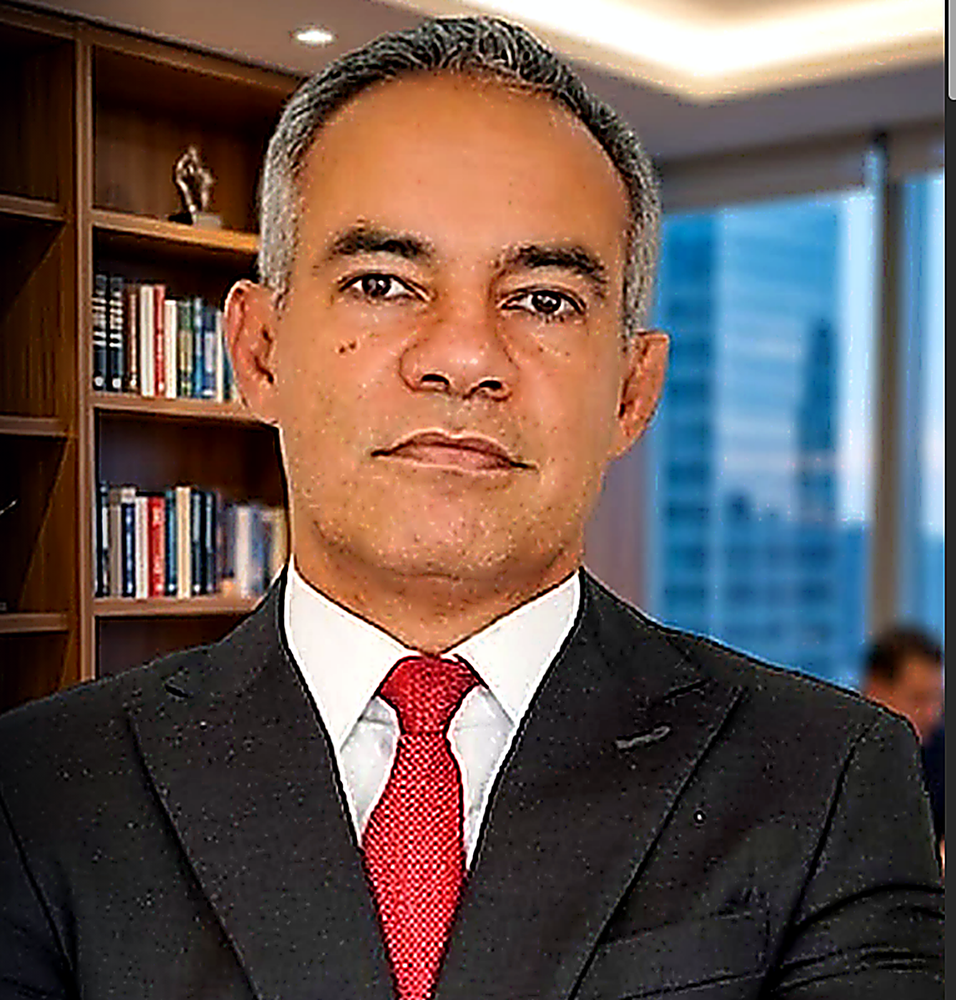
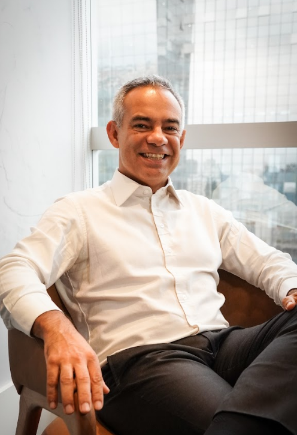

A convivência entre o modelo atual e o novo (IBS, CBS e Imposto Seletivo) traz dúvidas e interpretações conflitantes.
Nas 3 aulas do curso Mapa da Reforma, o Prof. Dr. Éderson Porto apresenta os fundamentos da EC 132/2023 e mostra, com didática e método, como organizar o raciocínio e entender a lógica da Reforma sem excesso de complexidade.
Uma introdução essencial para compreender com segurança o início da nova era tributária.
Mas o que vivemos agora não é apenas mais uma atualização normativa. É uma reconfiguração estrutural, com impactos profundos e prolongados na prática da advocacia tributária.
Até 2033, o novo regime vai conviver com o atual, criando zonas cinzentas, insegurança jurídica e sobrecarga técnica. Nesse cenário, quem atua sem método corre o risco de perder espaço, clientes e relevância.
Enquanto isso, o mercado se reorganiza silenciosamente:
A verdade é simples:
Na reforma tributária, quem chegar cedo não apenas beberá água limpa, mas também assumirá o controle do território.
Enquanto muitos esperam a poeira baixar, você pode se posicionar com clareza, atuar com método e transformar esse momento em uma vantagem estratégica real.
Quer parar de tatear informações desconexas sobre a reforma.
Precisa de uma estrutura prática para interpretar os impactos.
Busca se destacar como autoridade no novo cenário tributário.
Não aceita ficar à deriva enquanto o mercado se transforma.
Prefere método e clareza a conteúdos genéricos e superficiais.
Se essas frases descrevem seu momento, você não precisa de mais informação solta: você precisa de método, direção e uma leitura estratégica da reforma feita por quem está no campo.
Serão 03 aulas gravadas, disponíveis na área de membros.
Com o método 3D, criado pelo Professor e Doutor Ederson Porto, você vai entender a reforma tributária com clareza, destrinchar os pontos cruciais e dominar o novo cenário com segurança enquanto a maioria ainda está tentando entender por onde começar.

Advogado tributarista com mais de 20 anos de experiência. Doutor e Mestre em Direito Tributário pela UFRGS. Atualmente, leciona nos programas de Pós-Graduação da UFRGS e Unisinos. Ainda participou como Visiting Scholar em Berkeley.
Reconhecido como referência em Direito Tributário, o Prof. Éderson Porto une profundidade técnica com visão estratégica para o contexto tributário:
Sua abordagem para o DESAFIO MAPA DA REFORMA é construído sobre a lógica do método 3D: Dominar, Diagnosticar e Direcionar, que combina técnica, clareza e eficácia estratégica.
A cada nova norma publicada, quem se antecipa organiza seu raciocínio, reduz riscos e amplia oportunidades. Este desafio não é apenas um curso: é uma introdução estruturada que transforma sua visão sobre a Reforma Tributária.
3 aulas de 90 minutos
Acesso via área de membros exclusiva
Material estruturado para aplicar o Método 3D desde o início
Turma com número de participantes controlado para melhor aproveitamento
Não fique perdido. Não espere o caos chegar.
QUERO GARANTIR MINHA VAGA